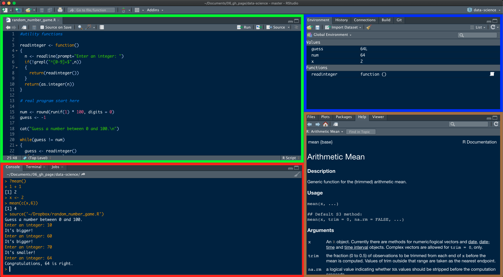

# Example error
1 + "a"Error in 1 + "a": nicht-numerisches Argument für binären Operator#Error in 1 + "a" : non-numeric argument to binary operatorBefore we dive deep into the methods that help us to make critical data-driven business decisions, we start with a brief introduction to R, the programming language most suited to solve problems of causality. Don’t worry, if you have never heard of it! We’ll go through some very concise courses that will familiarize you with its functions very quickly. Essentially, you have to tell R what to do for you in a specific language. But step by step, first, we have to do the installation.
R is only fun to use in combination with RStudio, a graphical integrated development environment (IDE) that makes the use of R more convenient and interactive. Please follow the steps as outlined in the instructions (note, that you have to install both R and RStudio):
When you have successfully installed R and RStudio, open RStudio and you should see a screen similar to this one. By the way, if you want to change the default withe theme to something else, you can do that by going to Tools -> Global options -> Appearance and switch theme in -> Editor theme.

RStudio is split into four panes that have the following functions:
Source Editor: here, you open, edit and execute programs/scripts that you have written. Code is not run immediately. If you want to run the current line of code, you just press Run or Ctrl+Enter/CMD+Return. You can also run several lines of code by highlighting them. Please note that every line starting with # will not be run. The use of # is to write comments and annotations in your code that won’t be executed.
Console: here, you can enter commands directly and run code. Just type in your code and press Enter.
Environment: here, you can see what objects (dataframes, arrays, values, functions) you have in your workspace/environment.
Miscellaneous: here, you have for example a file manager, an overview of installed and loaded packages, a plot viewer and a help tab.
Before you begin coding, it’s important to remember this final point: do not let the errors, warnings, and other messages that you, like everyone else, are bound to encounter intimidate you. There is no reason to panic just because you see red text in your console and in fact, what is returned will often times already help you to solve the problem and lead you onto the right track.
There are three different types of texts that communicate issues or information about the code execution:
# Example error
1 + "a"Error in 1 + "a": nicht-numerisches Argument für binären Operator#Error in 1 + "a" : non-numeric argument to binary operator# Example warning
as.numeric(c("18", "30", "50+", "345,678"))Warning: NAs durch Umwandlung erzeugt[1] 18 30 NA NA# Warning message: NAs introduced by coercion Warning: Paket 'ggplot2' wurde unter R Version 4.3.2 erstelltWarning: Paket 'tidyr' wurde unter R Version 4.3.2 erstellt── Attaching core tidyverse packages ──────────────────────── tidyverse 2.0.0 ──
✔ dplyr 1.1.4 ✔ readr 2.1.5
✔ forcats 1.0.0 ✔ stringr 1.5.1
✔ ggplot2 3.5.1 ✔ tibble 3.2.1
✔ lubridate 1.9.3 ✔ tidyr 1.3.1
✔ purrr 1.0.2
── Conflicts ────────────────────────────────────────── tidyverse_conflicts() ──
✖ dplyr::filter() masks stats::filter()
✖ dplyr::lag() masks stats::lag()
ℹ Use the conflicted package (<http://conflicted.r-lib.org/>) to force all conflicts to become errorsInteractive Tutorials:
But let’s no more talk about it but instead start coding because the best way to get familiar with R and to code is to just start.
In the following chapters, you will learn to code along the way, but to start you will go through some very concise tutorials from the R package swirl. The package provides a whole bunch of tutorials in the console.
Feel free to complete as many tutorials as you want, but for this class, the following tutorial is of particular use: The R Programming Environment (Chapter 2-12)
swirl() does not come with R by default but is an optional package. R packages are extensions of the base functionality implemented by default when you download R. Written by users around the world, packages provide additional features and are crucial for data science tasks in practice as you will later see.
You need to follow two steps to use an R package:
Once: install the package. As already mentioned, packages are not installed by default and you have to download it and add it to your library. Once you’ve installed it, you don’t have to repeat this step.
Always: load the package. By default, just the base R functionality is loaded and when you want to make use of the additional features provided by a specific package, you have to load it every time you start RStudio.
So let’s do it for the package swirl:
First, we install the package. This has to be done only once. You can either choose to write your code into the source editor or directly into the console
install.packages("swirl")Then, we load the library into our current our R session.
Now, the package is loaded and we can start making use of it.
install_course("The R Programming Environment")You just have to type swirl() into your console and follow the instructions! Please make sure to always use the same name. This way, you can leave the tutorial and start at the same position again later. It’s best to write it down so that you do not forget it.
swirl()Select the course you just installed: The R Programming Environment and start with Chapter 2. You should skip Chapter 1 because its irrelevant for you. If you accidentally selected Chapter 1, just quickly go through it and choose No at the last question.
swirl will ask you to install packages for you that are needed for the tutorial. Please confirm when asked. If you computer is struggling with installing a package named “vctrs”, please type in the following command. If you don’t get such an error, you can ignore it.
install.packages("vctrs", repos = "https://packagemanager.rstudio.com/cran/latest")If, at some point, you want to take a break, you can leave the swirl course by typing bye() or the Esc key. You can return to the course by typing swirl() and hitting Enter. And remember, to use the same name you used the first time.
You don’t need to submit anything from this step. Just focus on getting familiar with R by completing the tutorial (I recommend to solve chapter 2-12)!
Whenever you want to find out more about a command or you have difficulties understanding what it does, you can click on it and a help page will show up.